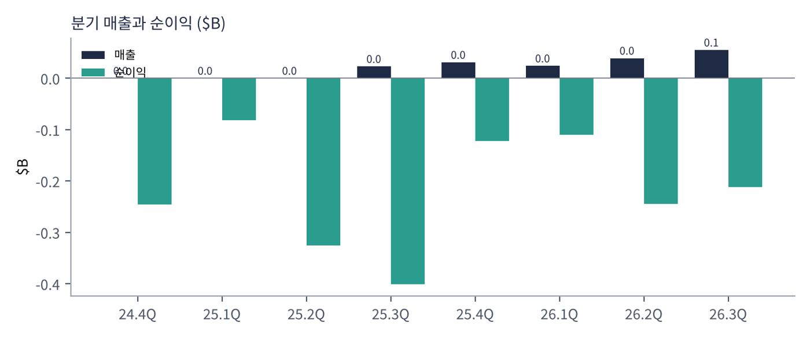
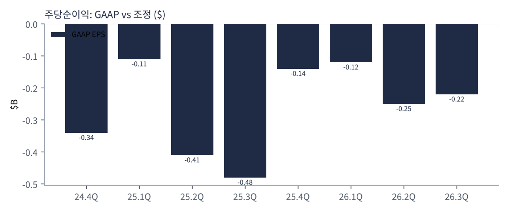
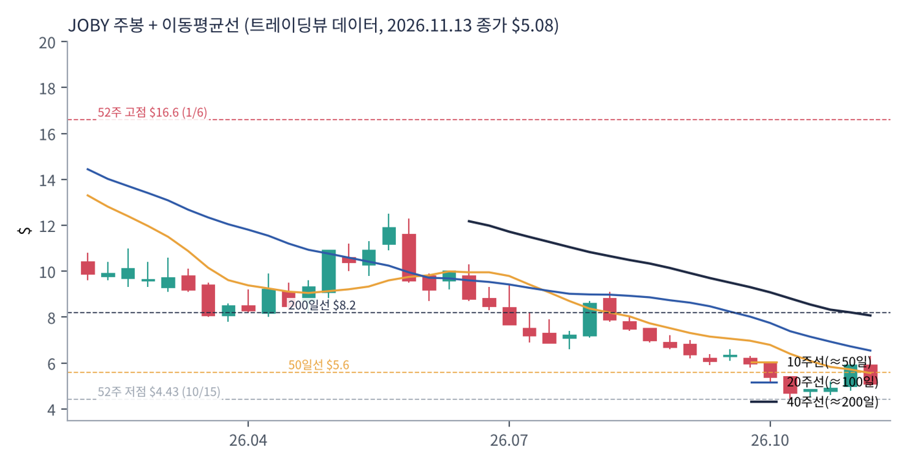
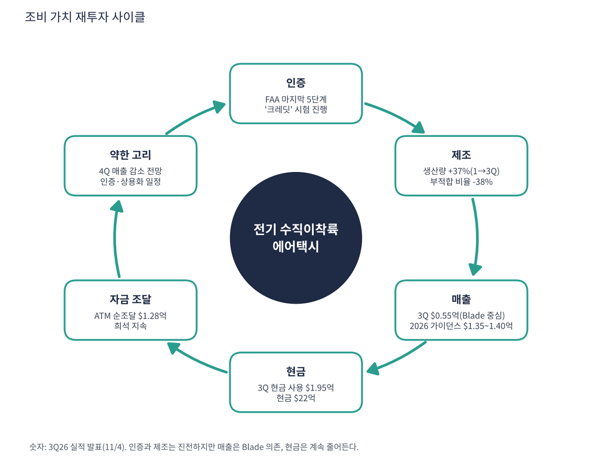

조비는 전기 수직이착륙(eVTOL) 에어택시를 개발·제작하는 회사다. 항공기를 직접 만들어 운항하는 모델을 택했고, 헬리콥터·전세 항공 서비스 블레이드(Blade)를 인수해 현재 매출 대부분이 여기서 나온다. 아직 FAA 인증을 받지 못한 상태에서 현금 $22억으로 분기마다 약 $2억을 쓰며 인증과 제조 확대를 이어가는 회사다.
| 항목 | 내용 |
|---|---|
| 종목 | Joby Aviation, Inc. (JOBY) · NYSE · 전기 에어택시 · 본사 미국 캘리포니아주 산타크루즈 |
| 시가총액 | 약 $52억 · PER 해당 없음(적자) · P/S 35.1배(스캐너) (11/13 종가 $5.08) |
| 최근 분기(3Q26) | 매출 $0.55억(전분기 $0.39억 대비 +42.6%, Blade 중심), 순손실 $2.12억(전분기 $2.45억), EPS -$0.22 |
| 현금·소모 | 현금·단기투자 $22억, 3Q 현금 사용 약 $1.95억(ATM 순조달 $1.28억 제외), 총차입금 약 $7억(구성 미확인) |
| 가이던스 | 2026 매출 $1.35~1.40억(기존 $1.15~1.25억, +15% 상향) · 하반기 현금 사용 $3.85~4.15억 |
| 제조·인증 | 8개 핵심 공장의 생산량 1→3분기 +37%, 부적합 비율 -38%. FAA 5단계 중 마지막 단계의 '크레딧' 시험 진행 |
| 다음 실적 | 4Q26 실적: 2027년 2월 24일 예정(트레이딩뷰). 2027 현금 사용 전망은 4Q 실적과 함께 제시 |
| 직책 | 인물 | 역할·특징 |
|---|---|---|
| 창업자·CEO | 조벤 베비르트 | FAA 인증의 마지막 단계에서 '크레딧' 시험을 광범위하게 마쳤다고 밝힘 |
| CFO | 로드리고 브루마나 | 3Q가 Blade의 계절적 정점이고 4Q는 보통 감소한다고 설명 |
경영 스타일: '인증과 제조 규모를 먼저 키우고 매출은 그 뒤에 따라온다'. 현금 사용은 분기 약 $2억로 2분기($2.02억)보다 줄었다. 3Q에 순손실이 줄어든 주된 이유는 워런트·얼아웃(성과 조건부 주식) 재평가 이익 같은 비현금 영업외 이익이다.
수직 이착륙하고 비행 중 날개로 순항하는 전기 항공기다. 소음이 낮고 도심 이동을 줄이는 것이 목적이다.
자체 항공기를 만들어 직접 운항하는 모델이다.
| 분기 | 매출 | 순이익 | EPS | 조정 EPS | 특이 사항 |
|---|---|---|---|---|---|
| 2024.4Q | – | $-2.46억 | -0.34 | – | |
| 2025.1Q | – | $-0.82억 | -0.11 | – | |
| 2025.2Q | – | $-3.25억 | -0.41 | – | |
| 2025.3Q | $0.23억 | $-4.01억 | -0.48 | – | Blade 편입 분기(첫 매출) |
| 2025.4Q | $0.31억 | $-1.22억 | -0.14 | – | |
| 2026.1Q | $0.24억 | $-1.10억 | -0.12 | – | |
| 2026.2Q | $0.39억 | $-2.45억 | -0.25 | – | |
| 2026.3Q | $0.55억 | $-2.12억 | -0.22 | – | Blade 성수기, 평가이익 포함 |


조비는 조정 EPS를 발표하지 않아 조정 EPS 열은 '–'이다(트레이딩뷰 Reported 값이 GAAP과 같음). 4Q24~2Q25는 매출이 없어 '–'로 표시했다. 순이익은 모두 순손실이다.
흐름 요약: 순손실은 3Q25 -$4.01억에서 3Q26 -$2.12억으로 줄었다. 이 중 $2.86억은 영업외 이익 개선으로 비현금 재평가 이익이 포함된다. 조정 EBITDA 손실은 전년 대비 $0.75억 늘었다(개발·인증·제조 투자). 매출은 Blade 편입으로 3Q25 $0.23억에서 3Q26 $0.55억으로 늘었다. 영업이익과 분기 설비투자의 8분기 값은 구하지 못해 표에서 뺐다.
| 구분 | 내용 | 비고 |
|---|---|---|
| Blade(헬리콥터·전세) | 3Q 매출 $0.55억의 대부분, 승객 4.4만 명 이상(기록) | 뉴욕 공항 노선 +61%(전년 대비), 3Q는 성수기 |
| 자체 에어택시 | 상업 운항 전 | FAA 인증 최종 단계 |
| 국방·기타 | 소규모 개발 용역 | 세부 금액은 확인하지 못함 |
| 2026 매출 전망 | $1.35~1.40억 | 1~3Q 합계 약 $1.18억, 4Q 약 $0.17~0.22억(내 계산) |
현재 매출은 Blade 서비스라 조비의 가치와 직접 연결되지 않는다. 4Q는 계절적으로 줄어든다고 CFO가 밝혔다.
조비의 방향은 'FAA 인증을 마치고 두바이 등에서 상용 서비스를 시작하며 제조를 키우는 것'이다.
| 축 | 최근 움직임 |
|---|---|
| 인증 | 5단계 중 마지막 단계에서 FAA와 크레딧 시험 진행 |
| 제조 | 8개 핵심 공장 생산 +37%(1→3Q), 부적합 -38% |
| 현금 | 하반기 사용 $3.85~4.15억, 2027 전망은 4Q 실적에서 |
| 자금 조달 | ATM으로 3Q $1.28억 순조달(주식 희석) |

| 이동평균 | 값 | 종가 대비 | 해석 |
|---|---|---|---|
| 5일선 | $5.68 | -10.6% | 현재가가 아래 |
| 20일선 | $5.12 | -0.8% | 현재가와 비슷 |
| 50일선 | $5.61 | -9.4% | 하향 |
| 100일선 | $6.67 | -23.8% | 하향 |
| 200일선 | $8.20 | -38.0% | 현재가가 크게 아래 |
주봉 흐름: 2025년 9~10월 $13~20 → 2026년 1월 고점 $16.6(1/6) → 1월 말 급락 → 3월 $8~10 → 5월 $12.5 → 6~9월 하락 → 10/12 주 저가 $4.4(52주 저점) → 11/2 주 고가 $5.9 → 11/9 주 종가 $5.1.
| 규칙 | 기준 | 현재 값 | 신호 |
|---|---|---|---|
| 장기 추세 필터 | 종가 vs 200일선 | $5.08 < $8.20 | 매도 |
| 중장기 교차 | 50일선 vs 200일선 | $5.61 < $8.20 | 매도 |
| 단기 교차 | 20일선 vs 50일선 | $5.12 < $5.61 | 매도 |
| 돈키언 채널 | 55일 고가 $7.18 / 저가 $4.43 | 중간값 $5.80 아래 | 매도 |
| 1개월 모멘텀 | 21거래일 수익률 | +5.6% (기준 $4.81) | 매수 |
| 3개월 모멘텀 | 63거래일 수익률 | -35.8% (기준 $7.91) | 매도 |
| 6개월 모멘텀 | 126거래일 수익률 | -51.0% (기준 $10.36) | 매도 |
| 12개월 모멘텀 | 252거래일 수익률 | -68.8% (기준 $16.30) | 매도 |
| 종합 (8개 평균) | -0.75 | 강한 매도 |
해석: 8개 중 1개 매수(1개월 모멘텀), 7개 매도로 -0.75(강한 매도). 1개월 모멘텀 기준 $4.81과 겨우 $0.27 차이라 곧 -1.00으로 내려갈 수 있다. 14일 ATR $0.40 (7.9%)(가격의 약 8%).
| 가격 | 무엇이 바뀌나 | 의미 |
|---|---|---|
| $4.81 이탈 | 1개월 모멘텀 | 매수 → 매도(점수 -1.00) |
| $5.8 상향 돌파 | 돈키언 중간값 | 55일 채널 전환 |
| $7.9 상향 돌파 | 3개월 모멘텀 | 추가 1개 전환 |
| $8.2 상향 돌파 | 200일선 | 장기 추세 필터 전환 |
| $10.4 상향 돌파 | 6개월 모멘텀 | 추가 1개 전환 |
| 구분 | 가격대 | 근거 |
|---|---|---|
| 저항 1 | $5.6 ~ 5.7 | 50일선·5일선 |
| 저항 2 | $5.8 | 돈키언 중간값 |
| 저항 3 | $6.7 | 100일선 |
| 지지 | $4.43 | 52주 저점(10/15) |
추세 추종으로는 매수 구간이 아니다. 인증 이벤트를 보고 소액으로 접근한다면 $4.5~5.2에서 계획 비중의 30%만 진입하고 종가 $4.2(52주 저점 $4.43 아래) 이탈 시 손절한다. 1차 목표 $5.8(돈키언 중간값), 2차 $6.7(100일선, 내 가정). 인증과 희석 위험이 큰 종목이라 비중을 작게 가져간다.
| 악재 요인 | 내용 | 강도 |
|---|---|---|
| 인증·상용화 지연 | FAA 인증 완료와 상용 운항 시점이 불확실 | 높음 |
| 희석 | ATM 3Q $1.28억, 하반기 현금 사용 $3.85~4.15억 | 높음 |
| 밸류에이션 | P/S 35배, 매출 대부분이 Blade | 중간 |
| 비현금 손익 | 순손실이 워런트·얼아웃 평가손익에 흔들림 | 참고 |
| 제3자 위험 | 항공기 인도·생산 목표·수익 구조·소송 등 정량 갱신 없음(보도) | 참고 |
| 티커 | 회사 | 시가총액 | PER(TTM) | PEG | P/S | EPS 성장(YoY) |
|---|---|---|---|---|---|---|
| JOBY | 조비 | $5B | 적자 | – | 35.11배 | +46% |
| ACHR | 아처 | $3B | 적자 | – | 286.29배 | -4% |
| RKLB | 로켓랩 | $39B | 적자 | – | 47.39배 | +5% |
모두 트레이딩뷰 GAAP TTM 기준이다. 적자 기업이라 PER·PEG는 없다. 사업 구조가 달라 참고용이다.
JOBY는 현금 $22억으로 약 11분기를 버티지만 그동안 계속 주식을 팔아야 한다. 3Q 현금 사용은 약 $1.95억, 하반기 가이던스는 $3.85~4.15억이다.
| 지표 | 값 | 계산·출처 | 해석 |
|---|---|---|---|
| 현금·단기투자 | $22억 | 회사 발표 | ATM 순조달 $1.28억 포함 |
| 총차입금 | 약 $7억 | 스캐너 | 구성 미확인, 순현금 약 $15억(내 계산) |
| 3Q 현금 사용 | 약 $1.95억 | 회사 발표(ATM 제외) | 2Q $2.02억 |
| 하반기 현금 사용 전망 | $3.85~4.15억 | 회사 가이던스 | 분기 평균 약 $2.0억 |
| TTM 잉여현금흐름 | 약 -$8억 | 스캐너 | |
| TTM EBITDA | 약 -$9억 | 스캐너 | GAAP 기준 |
| 가정 | 분기 현금 사용 | 남은 분기 | 비고 |
|---|---|---|---|
| 3Q 실적 기준 | $1.95억 | 약 11분기 | $22억 ÷ $1.95억 |
| 하반기 가이던스 상단 | $2.08억 | 약 10.6분기 | $22억 ÷ $2.08억 |
| 2027 사용량이 2배로 늘 때(내 가정) | $4.0억 | 약 5.5분기 | 공장 확대 시 시나리오 |
| 기준 | 값 | 비고 |
|---|---|---|
| P/S (스캐너) | 35.1배 | 트레이딩뷰 값 |
| P/S (2026 가이던스 중간 $1.375억) | 약 38배 | 시총 $52억 ÷ $1.375억(내 계산) |
| EV / 2026 매출 가이던스 | 약 27배 | EV ≈ $52억 + $7억 − $22억 = $37억 (내 계산) |
| 동종 | ACHR 286, RKLB 47 | 11/13 스캐너 |
해석: 매출이 거의 없어 P/S는 의미가 작고 인증·상용화 성공이 가치의 대부분이다. 순현금은 주당 약 $1.46로 주가의 29%다(주식 10.2억 주 기준, 내 계산). 스트레스 가정(2026 매출 가이던스 중간 $1.375억·순현금 $15억·주식 10.2억 주 고정, 내 가정): EV/매출 10배면 주가 약 $2.8(-45%), 20배면 $4.2(-18%), 30배면 $5.5(+8%)이다.
| 지표 | 값 | 판정 |
|---|---|---|
| PER | 해당 없음 | TTM EPS -$0.72 |
| EV / EBITDA | 해당 없음 | TTM EBITDA 약 -$9억(적자) |
| 연환산 3Q 순손실 | 약 -$8.5억 | $2.12억 ×4 (내 계산) |
| 방식 | PER | EPS 성장률 | PEG | 판정 |
|---|---|---|---|---|
| 트레이딩뷰 (GAAP TTM) | 해당 없음 | +45.6%(손실 축소) | – | 적자라 PER 없음, 성장률은 손실 감소율 |
| 조정 EPS 기준 | – | – | 산출 불가 | 조정 EPS를 발표하지 않음, 3Q 순손실 감소는 비현금 재평가 이익 효과 |
판정: PEG는 산출 불가다(적자). 이익이 아니라 인증 일정, 현금 사용 속도, 희석이 판단 기준이다. 이 때문에 08 현금 런웨이와 P/S 표가 핵심이다.

사이클은 인증·제조 → 상용 운항 → 매출 → 자금 조달 → 재투자다. 상용 운항 전이라 매출 고리가 비어 있다.
| 고리 | 현재 숫자 | 고리 강도 | 약해지는 신호 |
|---|---|---|---|
| ① 인증 | 마지막 단계 크레딧 시험 | 진행 | 인증 일정 지연 |
| ② 제조 | 생산 +37%, 부적합 -38% | 개선 | 품질 문제 |
| ③ 매출 | 3Q $0.55억(Blade), 4Q 감소 전망 | 약함 | 계절적 감소 |
| ④ 현금 | 현금 $22억, 분기 사용 $1.95억 | 보통 | 사용량 증가 |
| ⑤ 자금 조달 | ATM 3Q $1.28억 | 희석 | 주가 하락 시 조달 불리 |
| ⑥ 주가 | 52주 저점 근처, CTA -0.75 | 약함 | $4.43 이탈 |
구조: 강한 고리는 ②, 약한 고리는 ③⑤⑥이다.